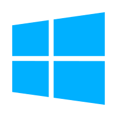

Slever
Firefox
Discord

Slever
×
Slever
SleverOS is an Privacy focused OS wich highly isnt made for gaming,
its meant for:
Work
All day things
Other things
SleverOS is Free and powered by Windows 11 and 10.
Stay tuned for more updates <3